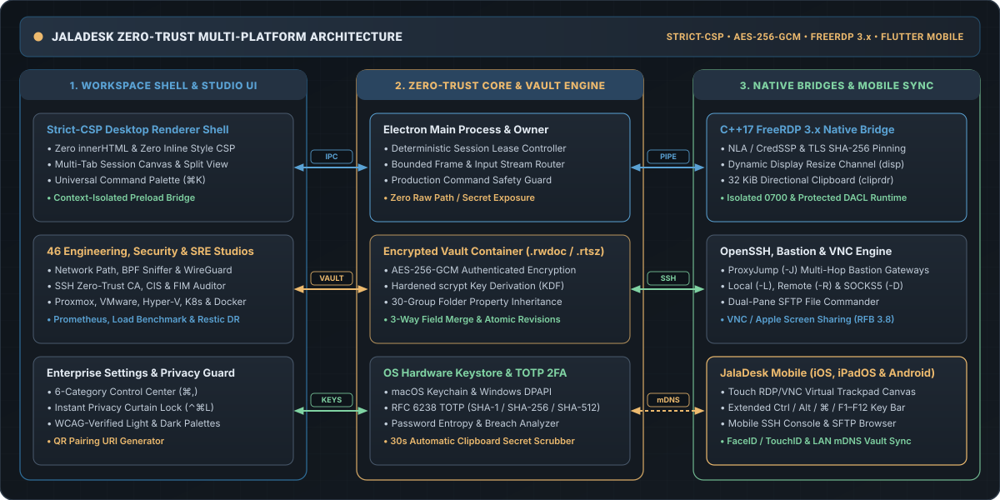

Zero-trust remote desktop, SSH & vault infrastructure for every screen.
Built for system administrators, SREs, and security-conscious operators. JalaDesk unifies native RDP and VNC desktop sessions, multi-hop SSH bastions, dual-pane SFTP file transfer, an offline two-factor authenticator, and optional client-side encrypted Cloud Sync inside one local-first workspace.
- macOS
- Windows
- Android
- iOS & iPadOS
Privacy Policy Terms of Service com.jaladesk.app


Precision touch control engineered for on-call mobility
Administer full graphical Windows and Linux desktops alongside multi-hop SSH bastions from Android phones, iPhones, and tablets without desktop-only compromises.
- Dual Trackpad & Direct Touch Modes: Toggle instantly between relative virtual cursor movement with live coordinate telemetry and pinch-to-zoom direct canvas touch.
- Workstation Modifier Strip: Dedicated tactile key bar for sticky Ctrl, Alt, Win/Cmd, Esc, and F1–F12 chord dispatch.
- Unified Cross-Device Inventory: Identical folder hierarchy, jump-host topologies, and certificate pins synchronized cleanly across desktop and mobile.

Hardware-backed vault & offline two-factor enclave
Every host inventory, SSH private key, password, and MFA seed is sealed locally on your device before touching disk or optional cloud storage.
- Authenticated Envelope Cryptography: Vault containers (.jvault, .rwdoc, .jaladesk) use AES-256-GCM with keys derived via PBKDF2-HMAC-SHA256 (100,000 iterations) and hardened scrypt.
- Offline RFC 6238 Authenticator: Generate live 30-second and 60-second TOTP codes (SHA-1, SHA-256, SHA-512) offline with one-tap auto-type into active sessions.
- OS Biometrics & 30s Clipboard Scrubber: Unlock via macOS Keychain, Windows DPAPI, Android BiometricPrompt, or Apple Face ID / Touch ID, with automatic clipboard secret expiration.
Multi-protocol architecture engineered for production fleets
Instead of scattering plaintext connection files, standalone terminal windows, and separate authenticator apps across workstations, JalaDesk isolates session rendering, secret derivation, and native protocol bridges inside one cohesive architecture.

| Subsystem | Protocols & Standards | Operational Capabilities |
|---|---|---|
| Remote Graphical Sessions | RDP (FreeRDP 3.x) · VNC (RFB) | NLA / CredSSP authentication, explicit TLS SHA-256 certificate pinning, dynamic display resize channel, fit-to-window scaling, and opt-in directional clipboard controls. |
| Bastion Shell & Transfer | SSH · SFTP · ProxyJump | Interactive terminal sessions, multi-hop bastion chaining, local/remote/SOCKS5 port forwarding, multi-host broadcast input, and dual-pane SFTP transfers. |
| Cryptographic Vault & 2FA | AES-256-GCM · RFC 6238 | Local scrypt and PBKDF2-HMAC-SHA256 key derivation, offline TOTP generation, App Lock PIN, OS hardware enclave unlock, and 30-second clipboard scrubbing. |
| Fleet Diagnostics & SRE | 46 Integrated Studios | Built-in DNS and MTR path telemetry, TLS certificate chain auditing, CIS hardening checks, SSH Certificate Authority workflows, and Prometheus endpoint inspection. |
- Hierarchical Policy Inheritance
- Organize hundreds of servers into nested folders where credentials, bastion jump hosts, and certificate pins inherit cleanly down the tree without duplicating secrets.
- Deterministic Smart Merge
- Field-level conflict resolution preserves workspace integrity when updating host inventories concurrently across macOS, Windows, Android, and iOS devices.
- Direct Point-to-Point Execution
- Every remote desktop, terminal, and file transfer socket connects directly from your device to the target host you configure. Developer Rizky Bachtiar Irwanto operates zero relay or telemetry servers.
Zero-knowledge Cloud Sync & Google Drive AppData transparency
JalaDesk requires no account and operates completely offline by default. When you opt in to Google Drive Cloud Sync, your vault is sealed locally on your device prior to upload and stored solely inside your own Google Account's isolated Application Data container.
-
Local VaultOn-Device Memory Only
Host inventories, SSH private keys, passwords, and TOTP seeds remain unencrypted strictly inside local process memory.
-
Key DerivationPBKDF2-HMAC-SHA256 (100k)
A 256-bit key is derived locally from your Vault Master Passphrase and random salt. Your passphrase never leaves your device.
-
Authenticated SealAES-256-GCM Ciphertext
Vault data is sealed into jaladesk-vault-v1.jvault with a unique initialization vector and 128-bit authentication tag.
-
Private AppDataGoogle Drive appDataFolder
Uploaded directly over HTTPS via OAuth 2.0 PKCE into your hidden appDataFolder with zero access to personal Drive files.
| Requested OAuth 2.0 Scope | Exact On-Device Purpose |
|---|---|
https://www.googleapis.com/auth/drive.appdata |
Reads, writes, and deletes only JalaDesk's client-side AES-256-GCM encrypted vault container inside your private Google Drive appDataFolder. Cannot view or access personal Drive files, folders, documents, or photos. |
openid |
Completes standard OpenID Connect OAuth 2.0 PKCE authentication directly between your device and official Google endpoints. |
userinfo.email |
Displays your connected Google account email locally inside JalaDesk's Cloud Sync status bar so you can verify which account is bound. |
userinfo.profile |
Displays your basic Google account display name locally inside JalaDesk's Cloud Sync settings view. |
Verifiable user control & zero backend exposure
- Zero Developer Servers: OAuth 2.0 PKCE token exchange and Google Drive API transfers run directly between your device and Google APIs over HTTPS. Developer Rizky Bachtiar Irwanto receives zero tokens, emails, or vault blobs.
- Alternative Self-Hosted Providers: Prefer your own infrastructure? JalaDesk supports identical client-side encrypted vault sync over private SFTP, WebDAV, or GitHub Gist.
- Instant Permission Revocation: Disconnect inside JalaDesk's Cloud Sync panel at any time, purge hidden app data in Google Drive settings, or revoke OAuth access directly at myaccount.google.com/permissions.
Google API Services User Data Policy (Limited Use)
JalaDesk's use and transfer to any other app of information received from Google APIs will adhere to the Google API Services User Data Policy, including the Limited Use requirements. Review full legal disclosures in our Privacy Policy and Terms of Service.